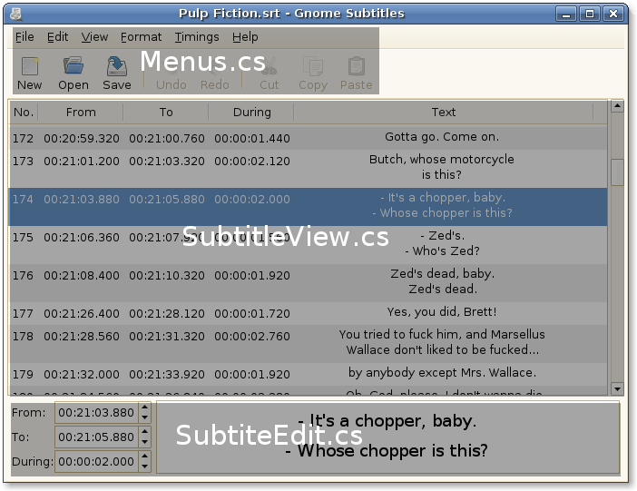

Contents:
Because a picture's worth a thousand words, i'll start with one.

As you can see, there are 3 main areas of relevance here:
Menus.cs – Handles all menus and toolbar operations, like setting the sensitivity for example.
SubtitleView.cs – Handles the TreeView with the list of subtitles. The inherent model of the TreeView is the Subtitles class (Subtitles.cs).
SubtitleEdit.cs – Contains a TextView and the timing SpinButtons which relate to the currently selected subtitle.
The top class of the entire interface is GUI (GUI.cs). This class contains the 3 parts of the window just described and a very important class in the whole program - the application core:
ApplicationCore.cs – Centralizes a set of variables to be used throught the program. The most important are references to the current timing mode being used (frames or times), the subtitles (Subtitles.cs), the event handlers (EventHandlers.cs), the command manager (CommandManager.cs) that performs undo/redo operations, and the clipboards (Clipboards.cs). We'll get to these soon.
One thing to keep in mind about Gnome Subtitles is that it uses SubLib as the backend. So, any methods to handle subtitles aren't implemented in Gnome Subtitles. In Gnome Subtitles, we handle the interface. SubLib is changed at request to include more features. The communication is easy because its lead developer is Gnome Subtitles' lead developer too. The SubLib's API is available at http://sublib.sf.net/api.
In Gnome Subtitles, the Subtitles class is used to call SubLib's methods:
Subtitles.cs extends SubLib.Subtitles and so all SubLib's methods are called in Subtitles.cs. The Subtitles class is also the model used in the TreeView (SubtitleView.cs).
Now, let's refer other important files of Gnome Subtitles, in alphabetical order:
Clipboards.cs – handles the Primary and Secondary clipboards. The primary is the one used in copy/cut/paste. The secondary is the one used when you select text and paste it with the middle mouse button.
CommandManager.cs: Manages commands. A command is an operation that changes subtitles, like adding text or changing a time, and is used in undo/redo. It stores the old value of the bits of subtitles it will change so they can be reverted on an undo. This file also contains the base Command classes, to be used when creating commands. Basically, when implementing a new feature, one has to write a NewFeatureCommand class that extends a base Command class. The available base commands are:
Command – The most basic of them all.
MultipleSelectionCommand – A command applied to (possibly) multiple selected subtitles. It automatically stores the selected subtitles when the command was ran and contains methods to select the subtitles and scroll to the selection. To implement a command like this one (e.g. The time shift command), you only have to override the ChangeValues method to shift the timings of the subtitles, the rest is already done for you.
SingleSelectionCommand – A command applied to a single subtitle. As the previous, it automatically handles subtitle selection and scrolling. You only have to override the ChangeValues method to do the actual job of changing the subtitle.
The existing commands are valuable examples on how to create commands.
EventHandlers.cs – Where the event handlers are defined. This includes handlers for the Menus, Toolbar, SubtitleView and SubtitleEdit. It includes all the handlers defined in the main window's glade file.
Utility.cs - Some basic and common utility methods
WidgetNames.cs – Where the names of the widgets are stored.
Gnome Subtitles uses Glade to design its main window and dialogs. As such, all main interface classes (GUI, SubtitleView, SubtitleEdit, Menus) inherit the GladeWidget class:
GladeWidget.cs – contains methods to get a widget and reference the main GUI.
As is easily noticeable, almost all the classes have a reference to the main GUI, so you can access any part of the interface from another part of the interface.
Finally, the dialogs. All the dialogs inherit the GladeDialog class:
GladeDialog.cs – When creating a dialog, just by passing it the name of the dialog, it automatically creates de dialog, sets it as transient for the main window, and assigns sets the Gnome Subtitles icon in it. Also contains some other basic methods.
Again, the existing Dialogs are good examples for creating new ones. Basically, to implement a new dialog, just create it in glade (inserting it in the used gnome-subtitles.glade file) and create a class that inherits GladeDialog.
This is all you have to know to start hacking on Gnome Subtitles. For more information, use the Mailing List or contact the Authors.
Gnome Subtitles is a work in progress. The TODO list in the development section of the website contains the planed features to be implemented next.